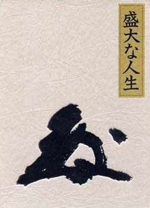

 |
目次 |
|
|
題名 ：成功の実現 述者 ：中村天風 値段 ：１０，１００円（税込み） 発行所：日本経営合理化協会出版局 ISBN4-930838-54-1 |
||
|
第四章 我が人生観（一部紹介） 途中略 主眼とするのが、どうせ遅かれ早かれ死んでいく命に対する最上の考え方だ、と決定したの であります。 こういう考え方はね、死ぬときが今まもなく来るだろうと思う人間でなきゃ考えられない 考え方なんだ。あなた方みたいに、当分は死なないだろうとのんきに考えてる人間の頭のな かにはでてこない考え方かもしれない。けれどね、人の命、まことに、 あすありと思う心の徒桜 夜半に嵐の吹かぬものかは というのが本当のことだもん。 しょっちゅう我々は死と対決してるんですよ。「Human is mortal（ヒユーマソ・イズ・ モータル）」という言葉があるじゃないか--- 人間とは死ぬものなり。 もういっべん言おうね。二度も三度も言ってさしつかえないんだ、私の人生観をね。 人生というものは、忍苦の忍耐道というような難しいことを考えるより、いつでも自己の 命に喜びをできるだけ多く味わわせるようにするところに、本当の生きがいがある。この人 生観が、確固不抜のものに、いわゆる断固たる悟りとなったのは、インドの修行が動機で、 それも極めて偶発的に私の心を決定させたので、こいつをひとつ話してみたい。 それはねえ、イソドに行ったごく最初の頃なんだ。半年たたない問だったかなあ。山の昼 間の修行を終わって麓に帰る途中、カリアッパ聖者はしょっちゅうロバに乗ってるんだ。私 はその後からくっついて歩いてた。ロバに乗ってる聖者の後ろから、こういう質問したんで す。 「デイヤーナの第一条件は、心を静かに安定していなきゃいけないんでしょ」 デイヤーナというのは瞑想のことなんだ。あなた方が現在、聞きながら考えてる、この瞑 想と同じだ。これをデイヤーナと言うんだ。無念無想をデイヤーナと言うんです。インドの 言葉なんかどうでもいいけど。 とにかく、「瞑想の第一条件は心が静かに安定していなきゃいけないんでしょう」 と言っ たら、 「オフコース ハもちろん）」 「なら、なぜもっと静かな場所で修行させてくださらないのです？」 なんせ、朝から晩まで滝の水がゴーゴーゴーゴーおっこって、耳が聞こえなくなるような ところに座らされてんですからね。 そうしたら、 「あの場所で、心が静まらないのか」と言うから、 「あんな場所で心が静まるはずありゃしませんよ。のべつ、耳が張りさけそうです。こう やって、あそこから離れて、先生のお伴して歩いてるときだって、まだ滝の音が聞こえます」 「あの場所で心が静まらないようなおまえなら、どこへ行っても駄目だな」 「でも、そうおっしゃいますけども、あの水の音では・・・」 「あの水の音がそんなにうるさいかい？」 「とってもうるさいですよ。うるさいなんていうのはあんなものじゃありません」 「私が特にあの場所をおまえのために選んだんだ、おまえのデイヤーナのために。おまえ のデイヤーナのためにあそこを選んだのに、そのわけがよくわかってないようだね」と言わ れるから、 「あんなうるさいところを私に特に選んだんですか。わけがわかるもわからないもありゃ しません。あんなところにいたら、ただもう耳が聞こえなくなるだけです」 「そうか。だけども、私は特におまえのために選んだんだぜ。苦心して」 「どういうわけなんです？」 そうしたら、それまで笑い演でいた人が急に難しい演してね、 「ま、一口に言やあだな、天の声を聞かせてやろうと思ってよ」 「ええっ！ 何です？」 実際そのとき私はね、びっくらこいちゃったよ。この男、ま、この土地じゃあいちばん偉 い、物知りだっていうし、私も話をしてみると、時々はなるほどなと思うようなことを言っ てくれる偉いところがあるんだけども、時々また変なことを言う。やっぱりこれは、我々と 違って、文化民族でないためだろうと思ったんですよ。俗にいう「愚者、賢者をはかりあた わず」ってやつだな。こっちは愚者なんだ。そう思ったよ。 まじめに話を開いてると、時々とてつもないことを言うんだ、今みたいに。滝の音でうる さくてしょうがないと言ったら、そのうるさいところで天の声を聞かせてやろう……。 「天の声って何です？」と言ったんだよ。 「天の声と言やあ、天の声だ」 おもしろくないから、ひやかし気分になってね。そらなりますよ。あなた方だって、私が 時どき難しいことを言うとね、こじわ寄せて、せせら笑いながら、ひやかし気分で私に質問 する人があるじゃないか。実際、身のほど知らずの大たわけだけども、 「天に声があんですか」 「ある」 「へえ－、こら初めて聞いた」 「そうだろうな。知らないようだ。知らなきゃ初めてだな」 「しかし、先生、それを聞いたことあるんですか」 「のべつ聞いてるよ、私は」 「のべつ聞いてるんですか」 「のべつ開いてるよ。現にこうやって今おまえと話してる問も聞いてるよ」と、平然と言 うんでね、この人は一種の精神倒錯的な病癖があるんじゃないかと思った。ま、そのときの 私の気持ちだから、笑わずに開いてくださいよ。 だから、今度は腹だち気分になっちゃったんだ。こんちきしょう、頭が少しどうにかなっ てるやつと話したって間に合わねえと思ったけどもね、 「あれですか、先生がのべつ聞いてる天の声というのはどこの国の言葉です？」 聞くほうがまぬけだわね、これ。 そうしたらね、 「どこの国の言葉という言葉じゃない。声だよ」 「声といって、言葉の声じゃないんですか」 「音だよ。けれど、貌在のおまえさんのように、水の音ばかり気にしてる耳には、天の声 どころか、地の声も聞こえないだろ」と、こう言うんだ。 ありや！ 今度は地の声がでた ーー と思って、 「地の声もあるんですか」 「あるある」 「地の声って何です？」 「地の声っていうのは、もう一言でわかるじゃないか。地上にある鳥や獣や、風によって 木がすれあう音、あれが地の声だ」 「ああ、そうか」 「それが聞こえるだろう」 「聞こえやしませんよ。あのゴーゴーゴーゴー絶え間なく激しい、高いところからおっこ ってくる滝の水の音。そんなもん聞こえるはずないじゃありませんか」 「聞こえるはずがないと思ってりや聞こえないなあ。ためしだ、な、あしたっから岩かど で、瞑想のあいまに時々、鳥や獣や風の声を聞こうと思って、とにかくその音をつかま える気分をだしてごらん。ま、それからだ、天の声は」 「鳥や獣や、風の声などが、あの滝の音のあいだから聞こえるんですか」 「だからさ、今ここで話したってわかりやしないじゃないか。あした、ま、やってみろ0 っかまえられるか、つかまえられないか。そらまあ、言でできなけりや、二日、三日、や ってごらん。そのうちにはできるようになるだろうから。そして、それができるようになっ てから、天の声の話をしようじやないか」 そういう研究の仕方なんですよ。とにかく親切なもんでね。一人と一人なんだから。あな た方みたいにこんな集い寄って、目の前で話してくれるんじゃないんだからね。 とにかく、何にも知らない、全くの無学文盲といっていいような当時の私。実際、人生に こと関するかぎりは無学文盲だったよ。知ってるのはただね、医学のグルソト（基凝）だけ なんだ。それ以上、問い返す材料が頭のなかにないんだからね。だから今度は、言われるま ま、やってみようかと思って、 「じゃぁ、あしたからやってみます」と言ったら、 「やってみろ」 さあ、 その明くる日から、もうほとんど瞑想なんかしやしない。岩かどに座っちゃ、鳥の 声や獣の声を開きたい努力を一生懸命やってみた。最初のうちはとても駄目なんだ。けど、 二、三時間たってからまもなく、何とかすかながらも時々、あの岩、この岩へと飛びかう鳥 の声や、遠くのほうから難が声や靴の声などが聞こえるようになってきたんだ。あれ、おか しいな、今まで俺、聞こえてなかったのかしらん・・・。それで数日の後には、もう滝の音を 聞きながらも、ほかの音がドンドソ聞こえるようになってきたんだ。 聞こえるようになると同時に、欲がでる。「するとこれは、天の声も聞けるかもしれな い。こんな気持ちになれてきたんだから」と。もうそのときに、自分の心が無念無想になり かかってきたってことはまだ知らないんだよ。 それでもう、天の声ってどんなんだろうな、いったい －そら思いますがな。 全くお払ずかしいほど愚かであった私。何とかして天の声なるものを聞いてみたいものだ と、そらもう在日毎日、どんなに人知れない苦労以上の努力をしたかわからなかった。 現在のあなた方みたいに、チラチラ、チラチラ気持ちがほうぼうへ飛び貯わされるような ものがないんだから、インドの山の中は。何にもないんだもん、山の中だから。だから、考 えること一本よりほか仕事がないんだ。そこで、何とかして天の声、天の声と思うんだけど ・・・・・以下略 この後は購入するか図書館で借りて下さい。 |
||